General
To complete this project, you will need the following tools:
-
a good phillips head screwdriver
I recommend a gyroscopically controlled electric screwdriver, since it will allow fast assembly while still allowing you to regulate speed to prevent stripping.
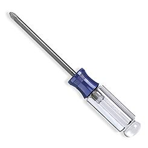 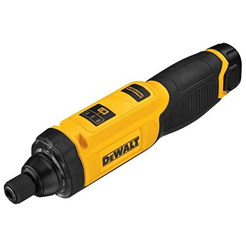 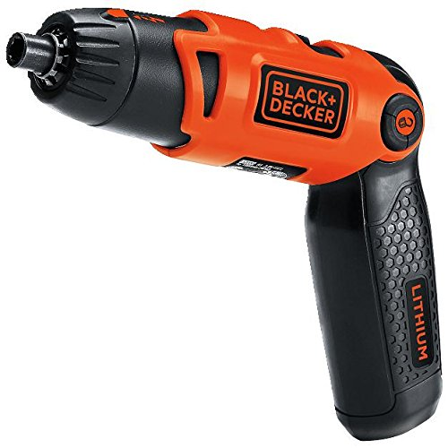
-
wire strippers
 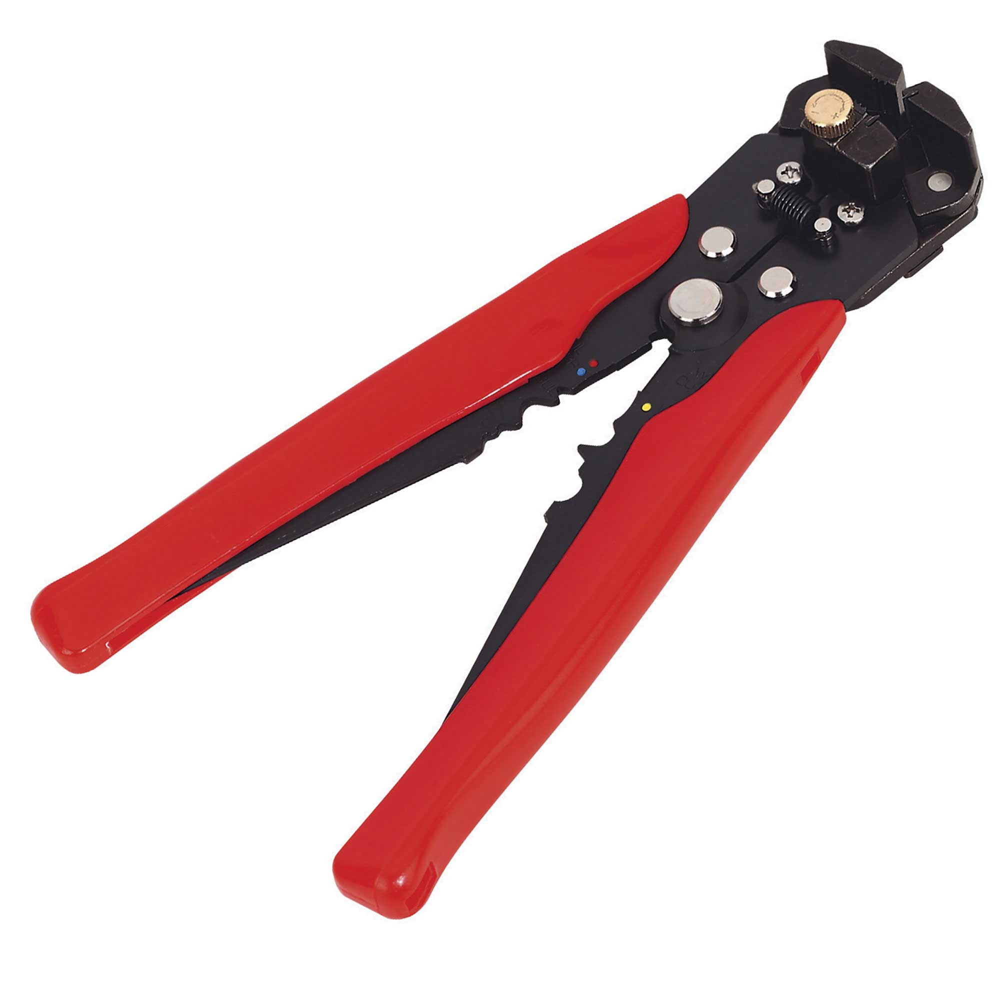
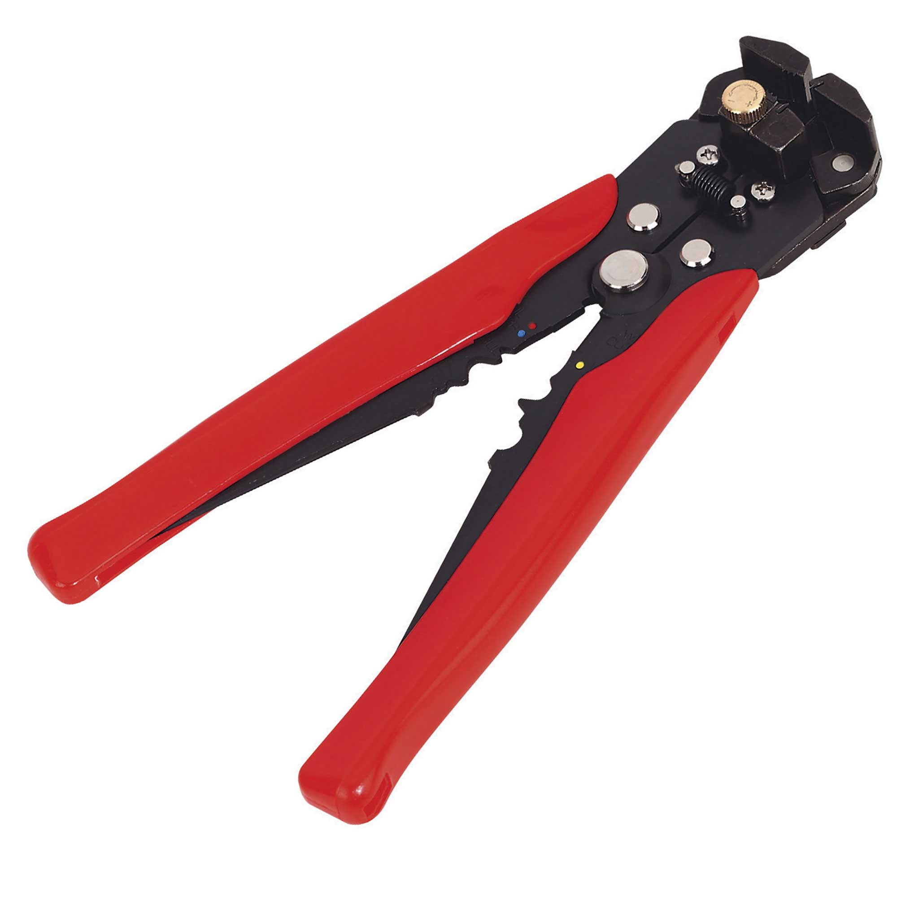 -
flush wire cutter
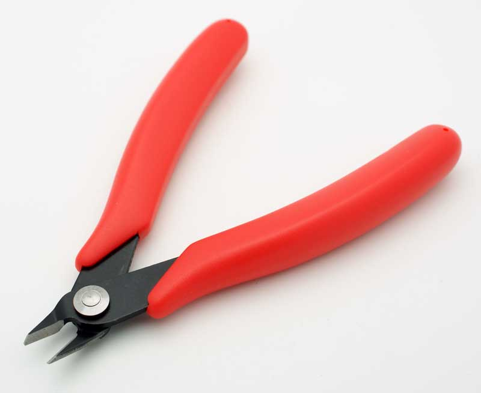
-
exacto knife

-
tweezers

-
soldering iron

-
helping hands

-
heat gun
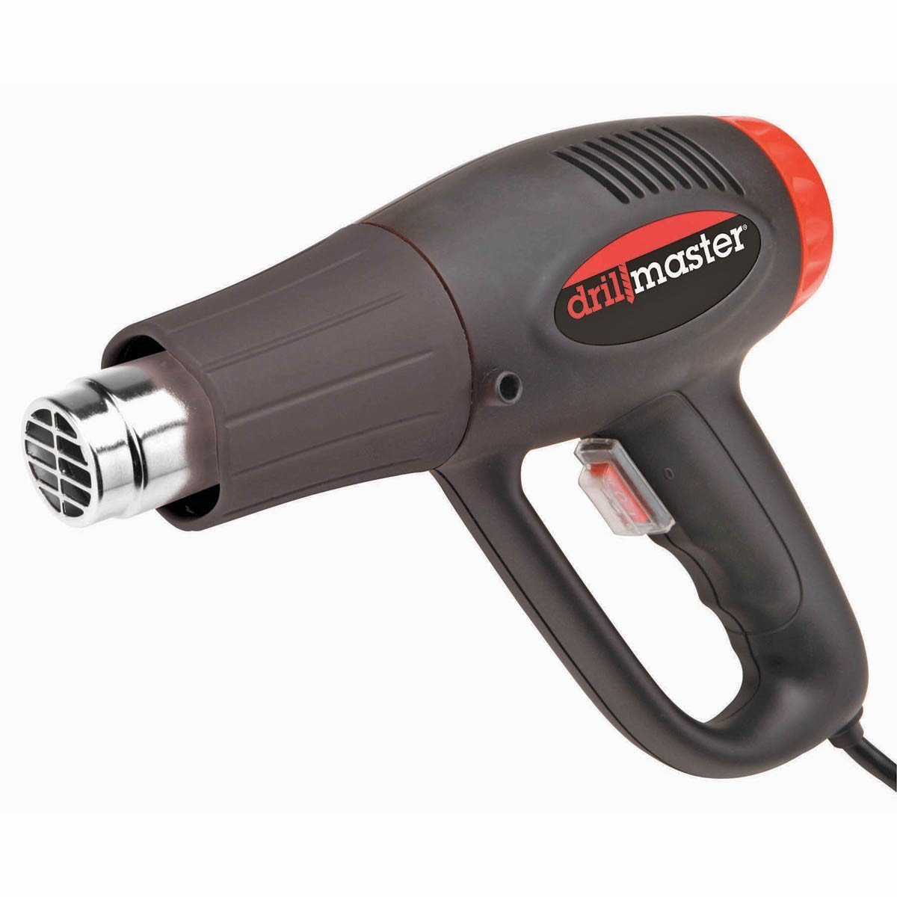
3D Printing
If you want to 3D print the mechanical components yourself, you'll also need the following tools. If don't want to invest in a 3D printer, you can outsource the printing to one of many companies like Shapeways.com or Ponoko.com.
-
a 3d printer with a print volume of at least 15cm^3. All parts were originally developed and printed using a Printrbot Simple Metal with heated bed.
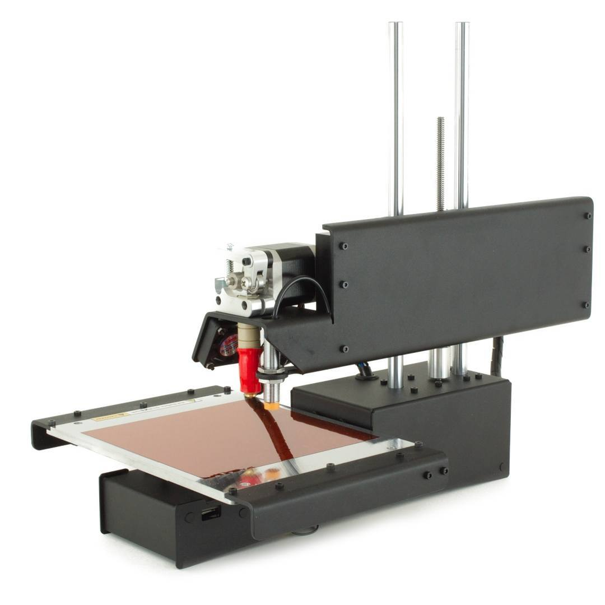 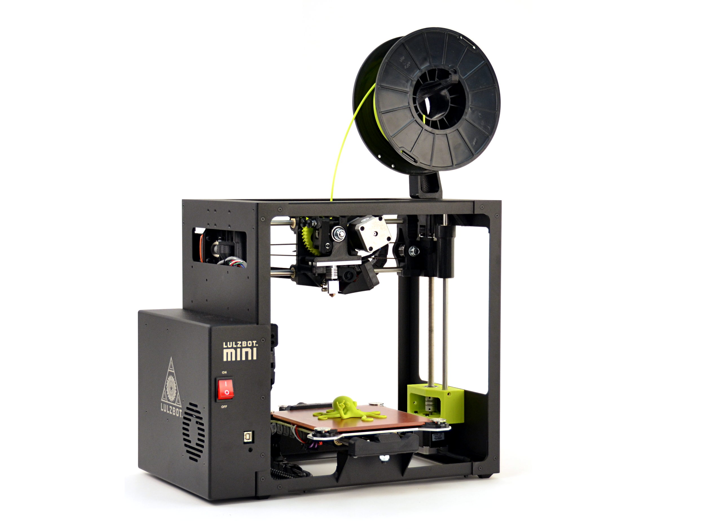 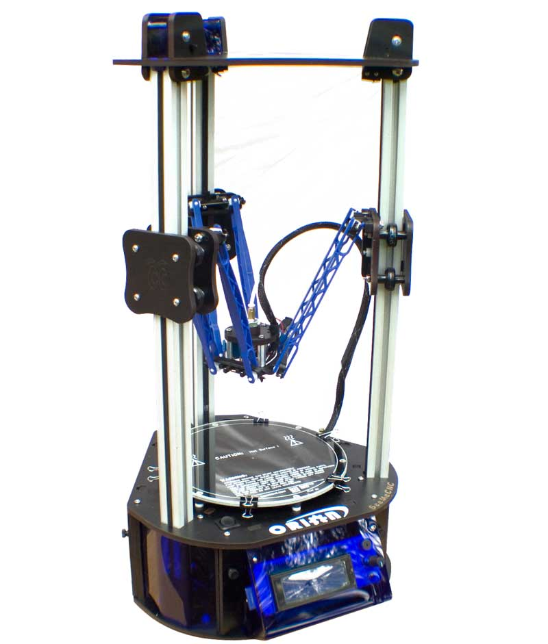
-
4-inch taping knife

-
tapered pallet knife

PCB Fabrication
If you plan to fabricate your own printed circuit boards, you'll need the additional tools.
-
black and white laser printer

-
1qt plastic container
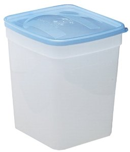
-
air pump with bubbler


-
laminator

-
toaster oven or reflow oven